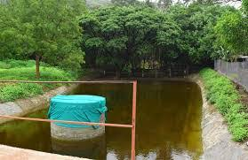
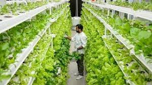
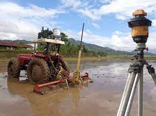
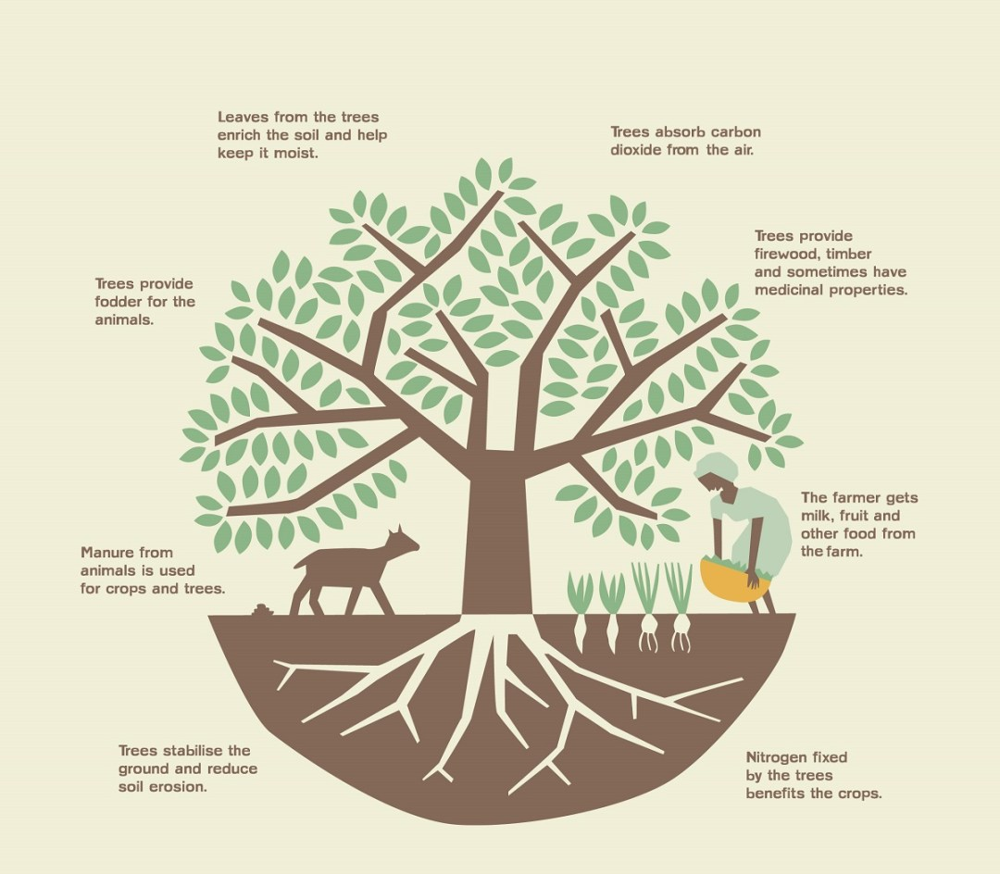
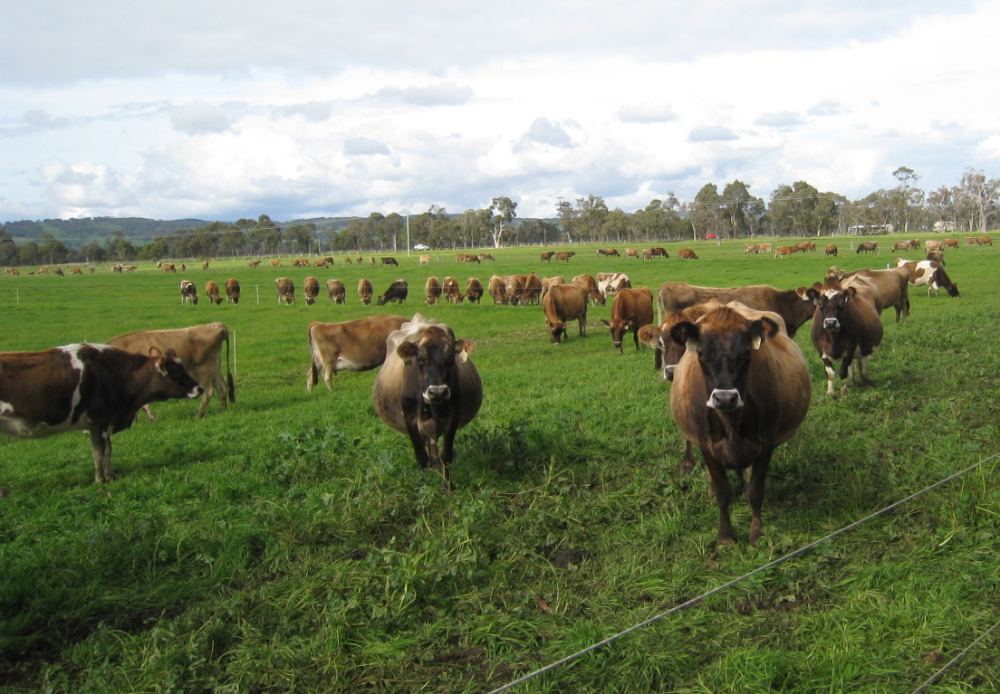
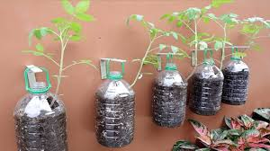
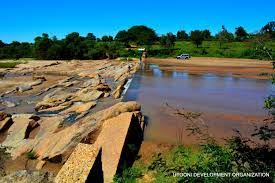
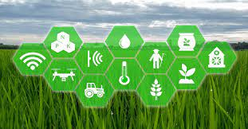
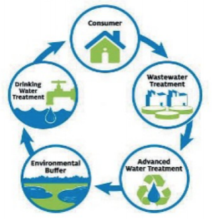

Agriculture water conservation methods
Water resources can be conserved in two ways:
- By increasing the availability of water resources.
- By reducing the consumption of water resources.
The following are some recent water conservation strategies taken to fulfil the needs of agricultural and rural settlements:
-
The Jal Shakti Abhiyan (JSA) concentrated on five components of water resource conservation and utilized 75 percent of Mahatma Gandhi National Rural Employment Guarantee Act (MGNREGA) funds to strengthen the reservoirs.
The five aspects of water resource conservation, as listed by JSA are:- Rainwater Harvesting and Water Conservation
- Renewal of traditional water bodies
- Water reuse and recharging structure
- Watershed development
- Intensive Afforestation
- Flood irrigation is used by Indian farmers, resulting in water waste, soil erosion, and manure seepage into groundwater (groundwater pollution). For the same crop, Indian farmers consume 3-4 times more water than farmers in the United States and China. To save water in agriculture, the government is now focusing more on the usage of sprinkler and drip irrigation techniques.
- To prevent water loss owing to evaporation, more focus is being placed on soil mulching.
- The utilization of groundwater and the conservation of surface water are receiving more attention.
Better Methods of Conserving Water in Agriculture:
1.Rainwater Harvesting
To control the declining groundwater, and combat the scarcity of water, rainwater harvesting method has been used for years now. As the name suggests, we collect the rainwater in large tanks and use them for ecological and sustainable developments. This method can be practiced at home,offices, parks or large areas. Even individuals can participate in the activity, without seeking help from the community.
2.Reduced Evaporation
Evaporation is another major source of water waste, especially when fields are left fallow for long periods of time: "Soils fallowed over a 21-month period (from harvest to crop year's spring) should expect to lose three-fourths of the precipitation received." Water loss can be reduced by utilising maintenance techniques such as coating fields in light-colored soil to reflect sunlight or using wheat-grass strips to block wind. Other methods include decreasing tillage and keeping crop residue on the soil's surface.
3.Indoor Farming: future of the Country
With the 1st movable hydroponic vertical farm introduced in Pune, India is looking forward to more such farms as they cut the water consumption by 90% compared to horizontal farming because of the smart irrigation system. Indoor farms like AeroFarms in the U.S. use about 95% less water than the conventional agriculture methods on a very small part of land.
4.Black Plastics and Organic Mulches

Mulching is a process in which the open surface of the ground is covered by a layer of some external material, called mulch. This mulch can be prepared out of plastic (a thin layer of polyethylene), decomposable organic material (which has the advantage of increasing the humus content of the soil, and hence, improving overall soil quality), minerals (like crushed stones, clay pellets, slate, peat moss, etc.). Mulching helps in water conservation during irrigation, since it retains soil moisture. Mulch is directly responsible for water conservation, since it traps the surface water of the soil, and helps in avoiding the evaporation of water. Not just in terms of water conservation, mulching has proved its worth with improved soil health. Mulching activates micro-flora and beneficial microorganisms start developing in the soil.
5.Laser Leveling
If the soil surface is left uneven, it impacts the crop yield, since germination takes place. This is one of the reasons why farmers spend most of their time and resources in leveling their fields properly. Traditionally, the land was leveled with methods that were expensive, time-consuming, and cumbersome, but today, with the advancement in technology, the laser land leveling method is being used. Leveling of farms helps the inaccurate distribution of water over the surface. It's a technique of ensuring that water gets to the places where it's most needed.
6.Agroforestry
Agroforestry is a concept that involves planting trees in the environment. This concept is beneficial to the earth, animals, and plants. Planting native or exotic deciduous species that generate high-value tree products (such as fruit or lumber) and root and shoot trimming can improve water efficiency while also creating new economic opportunities. https://www.worldagroforestry.org/news/agroforestry-water-wise-farming
7.Rotational Grazing
Rotational grazing involves moving livestock between fields to encourage pasture regeneration. Water absorption, reduced water runoff, drought-resistant pastures, increased soil organic matter, and greater forage cover make water conservation simple with rotational grazing. Keep in mind not to overgraze the ground.
8.Plastic buckets for starting trees
Starting young plants in the wastebaskets left at building sites can be a terrific way to reuse them. Simply using a 5-gallon bucket, and drilling a few drainage holes in the bottom, keeping it near to a small tree would be enough for such farming. A tiny pipe can also be attached to the holes and left near the tree. This strategy allows for gradual irrigating of the crops.
9.Sand dams
Sand Dams were introduced in India, Africa, and South America for more than 50 years now. Initially developed by Romans in 400 BC, it still is underutilized. These sand dams creations provide us with clean drinking water, following a very simple concept. These dams are built by digging a deep trench and later, filling it with concrete. The dams are generally built across small rivers that dry up during the dry season, causing the sand to become saturated with water and capable of holding 2 to 10 million liters.
10.Introduction of Artificial Intelligence in agriculture: Improved agriculture
From smart water sensors on the ground to drones and satellites in the air, farmers can access better ET (evapotranspiration) data and apply more targeted irrigation methods. For more accurate – and actionable – data, new IoT technologies can track all variables such as soil humidity, soil temperature, soil wetness, and so on in real-time. These technologies, according to IBM, can help minimize waste and boost agricultural productivity by combining soil and ambient sensors. Farmers can even use weather forecasts to "create improved irrigation systems to save water and reduce pesticide waste by predicting rain," according to the researchers.
11.Boosting sustainable agriculture using recycled water
Scientists have long observed that farmers and the general public dislike recycled water due to a situation known as the "cringe factor," which occurs when people perceive recycled water as unsanitary. If people understood how recycled waterworks and why it's safe to use, might improved educational outreach overcome some of the reluctance to reuse water? By recycled water, scientists and officials talk about municipal treated wastewater, which starts out as sewage and then goes through a carefully controlled process at a wastewater treatment facility to become recycled water.